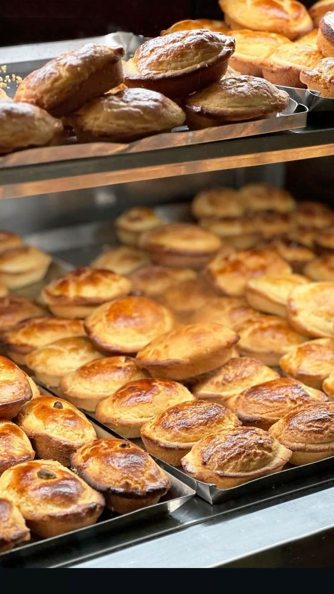
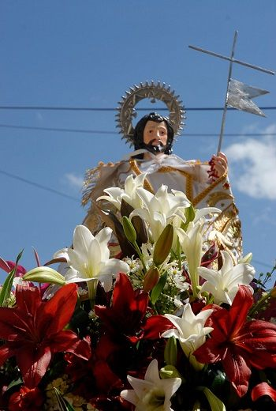

Festival Cultural
Día Nacional de los Pueblos Mágicos
Se celebra el 5 de octubre con actividades que destacan la identidad cultural y la historia de Huasca, primer Pueblo Mágico de México.

Tradición y Gastronomía
Festival del Paste
Se celebra en octubre, resaltando la herencia minera y los pastes típicos ingleses en la región. Incluye concursos, degustaciones y exposiciones.

Evento Cultural
Festival Internacional del Paste
Se realiza a mediados de octubre, con actividades culturales, gastronómicas y artísticas, celebrando la tradición minera y del paste.
Festival Cultural
Festival de la Flor de Cempasúchil
Se celebra en noviembre, destacando la cultura indígena otomí y las tradiciones del Día de Muertos, con exposiciones de flores, música y danzas.
Fiesta Religiosa
Fiesta de la Santa Cruz
Se celebra el 3 de mayo con procesiones, danzas tradicionales y eventos comunitarios en honor a la Santa Cruz.

Fiesta Religiosa
Fiesta de San Juan Bautista
Celebrada en junio con procesiones, danzas tradicionales y actividades en las plazas del pueblo.
Festival Agrícola
Festival del Maíz
Se celebra en agosto, destacando la importancia del maíz en la gastronomía y cultura local. Incluye exposiciones y talleres.
Feria Cultural
Feria del Acueducto
Se celebra en junio con visitas guiadas, conferencias y actividades recreativas en torno al Acueducto del Padre Tembleque, Patrimonio de la Humanidad.
Gastronomía y Tradición
Feria de la Barbacoa
Se celebra el 8 de julio, dedicada a la barbacoa tradicional. Incluye concursos, exposiciones y degustaciones.